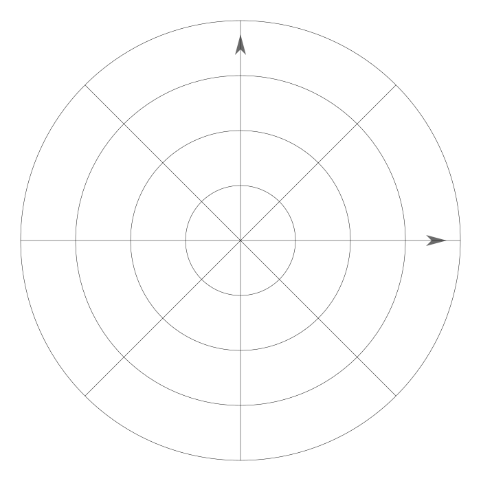
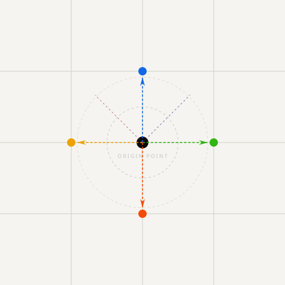

Explore directions
Łączymy analizę danych, strategię produktu i sytuację rynkową — aby wyznaczyć odpowiednie działania dla Twojej firmy.
WanderNext to studio analityczno-strategiczne, które pomaga firmom znajdować i realizować ich następny krok. Nie oferujemy gotowych rozwiązań — razem mapujemy przestrzeń możliwości.
Działamy na styku danych, strategii produktu i komunikacji. Łączymy analityczne myślenie z uzasadnionym rynkowo spojrzeniem — bo dobra strategia to nie tylko liczby.

Zaczynamy od zrozumienia sytuacji zastanej. Mapujemy rynek, użytkowników, dane, produkt i konkurencję — zanim zaproponujemy rozwiązania.
Na podstawie analizy wyznaczamy kierunek. Firma dostaje jasny kompas — strategię wzrostu lub model monetyzacji.
Strategia bez działania nie ma wartości. Pomagamy wdrażać: projekty produktowe, kampanie, analitykę, eksperymenty growth.
Działamy na styku strategii, danych, produktu i marketingu — bo żaden z tych obszarów nie działa dobrze w izolacji.
Strategia produktu, wzrostu i marki — oparta na danych, nie intuicji.
Dane potrafią pomóc — ale trzeba właściwie je wykorzystać. Pomagamy identyfikować szanse ukryte w liczbach.
Nowe funkcje, nowe przychody, optymalizacja tego, co już masz.
Małe zmiany, duże różnice — iterujemy to, co już działa, żeby działało lepiej.
"Nie szukamy jednej odpowiedzi. Mapujemy przestrzeń możliwości — aby wskazać właściwy kierunek."
— WanderNext Studio
Opowiedz nam o swoim wyzwaniu. Umówimy się na krótką rozmowę — aby opowiedzień nam, gdzie jesteś i dokąd chcesz dotrzeć.
Napisz do nas → hello@wandernext.co